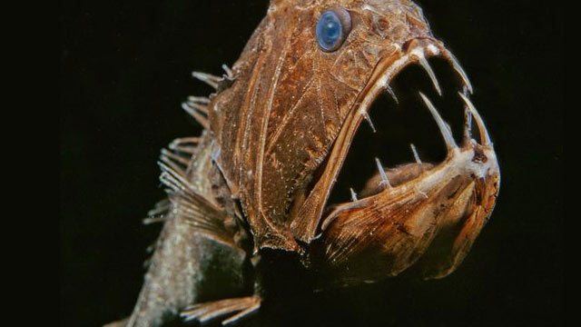
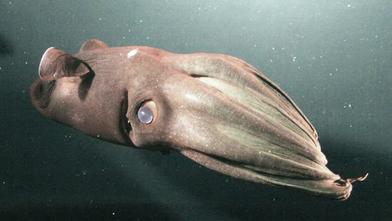
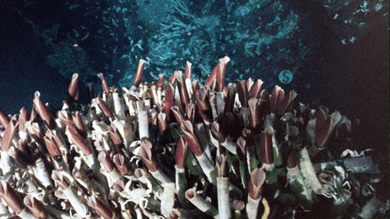

Mark Shrope and John Pickrell | September 04, 2006 11:54am
In 2003 researchers found many unique bacteria in sediments 300 m beneath the Pacific seafloor, feeding on sediments millions of years old.More spectacular are the deep-sea corals, found at depths of up to 6000 m in waters as cold as 2°C.
Humpback Whale — Photograph from Getty Images
Weird world
The bizarre inhabitants of the deep include: deep water sharks; devilish-looking dragonfish, that fire beams of red illumination from "lamps" under their eyes; many bioluminescent fish; ancient coelacanths; creeping sea lilies; blood-red squid; an octopus with glow-in-the-dark suckers; bell-shaped, metre-wide jellyfish, snails with armour-plated feet and a deadly jellyfish relative that uses fluorescent tentacles to lure prey.
Perhaps the most dramatic creature is the 13-metre-long giant squid, Architeuthis and the even more fearsome 15-metre-long colossal squid, never seen alive. Sperm whales and Antarctic sleeper sharks are the only animals equipped to take on these deep-sea prey.
Life is also found in the form of bacteria, worms and crustaceans, which teem in the abyssal plains that cover vast stretches of the deep. They feed off organic "snow" that falls from above. Deep below the sea floor, life was not thought to be possible. But then in 2003 researchers found many unique bacteria in sediments 300 m beneath the Pacific seafloor, feeding on sediments millions of years old.

Fangtooth Fish — Photograph from Getty Images
Atlantic Wolffish Pair — Photograph from Getty Images

Vampire Squid — Photograph from Getty Images
Humpback Whale — Photograph from Getty Images

Giant Tube Worms — Photograph from Getty Images